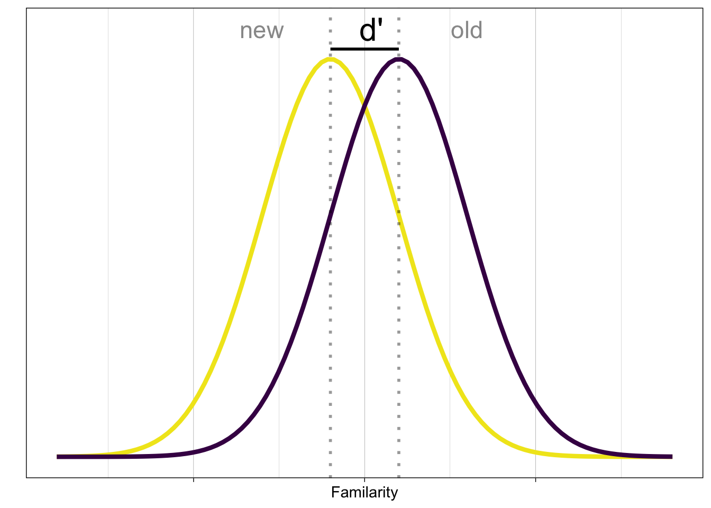
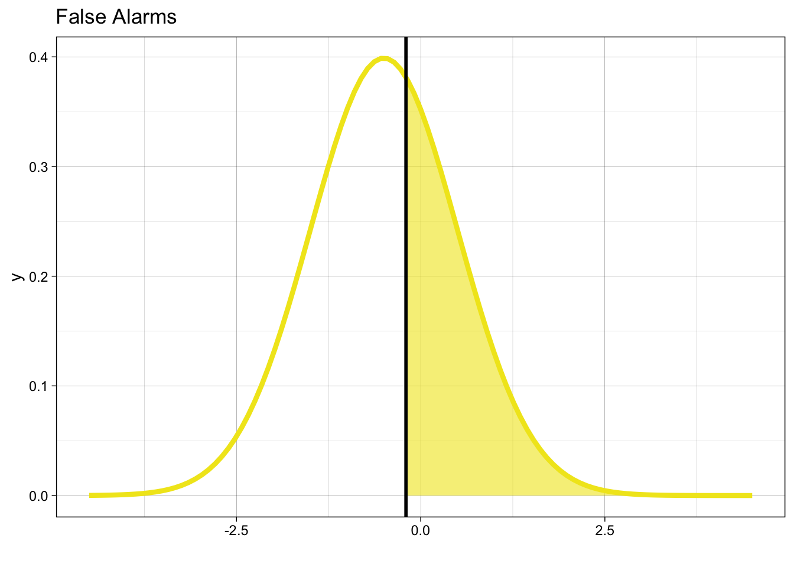
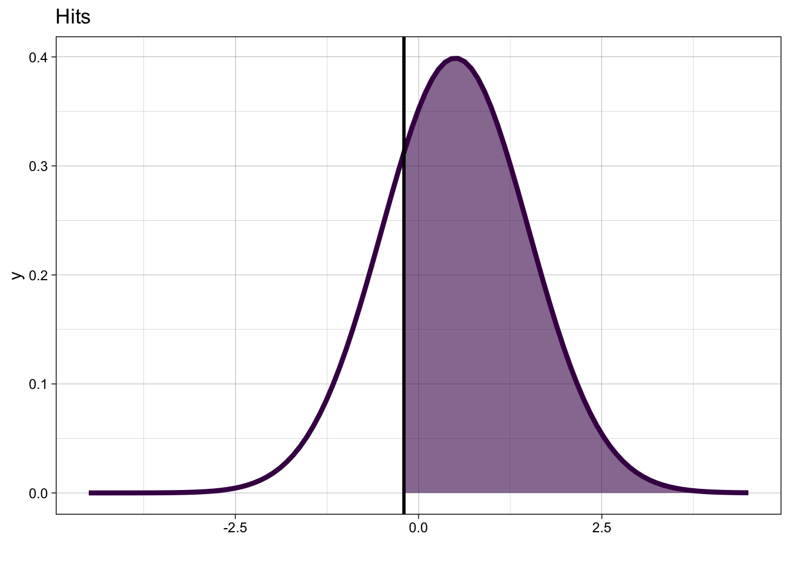

![]()

Einführung
Signal Detection Theory: Entscheidungen unter Unsicherheit.
Lernziele
In der heutigen Sitzung lernen wir:
- Simple binäre Entscheidungen mit Signal Detection Theory modellieren
- Konzepte der Signal Detection Theorie (SDT)
- SDT mit R simulieren
Entscheidungen unter Unsicherheit
Entscheidungsfindung unter Unsicherheit tritt auf, wenn Sie Entscheidungen treffen müssen, ohne vollständige Informationen über mögliche Ergebnisse zu haben. Der Prozess beinhaltet:
- Identifizierung des Problems oder der Entscheidung. Dies bedeutet, dass wir unsere Hypothesen formulieren müssen.
- Sammeln von Informationen (Evidenz) als Entscheidungsgrundlage.
- Schätzung der Wahrscheinlichkeiten von Ergebnissen für jede Alternative unter Verwendung verrauschter Daten.
- Bewertung potenzieller Kosten und Risiken unter Berücksichtigung objektiver und subjektiver Faktoren.
- Abwägung von Faktoren und Auswahl der Option, die Ihren Zielen und Präferenzen am besten entspricht.
Mehrere Modelle und Werkzeuge können bei der Bewältigung von Unsicherheit helfen:
- Erwartungs-Nutzen-Theorie: Schlägt vor, die Option mit dem höchsten erwarteten Nutzen zu wählen, berechnet durch Multiplikation der Wahrscheinlichkeit jedes Ergebnisses mit seinem Nutzen (Zufriedenheit oder Präferenz).
- Prospect-Theorie: Berücksichtigt die Verzerrungen und Heuristiken von Menschen bei der Entscheidungsfindung unter Unsicherheit, wie Verlustaversion und Wahrscheinlichkeitsgewichtung.
- Entscheidungsbäume: Grafische Darstellungen, die bei der Visualisierung und dem Vergleich von Optionen, Ergebnissen und Wahrscheinlichkeiten helfen.
- Bayesianische Entscheidungstheorie: Kombiniert vorhandenes Wissen mit neuen Informationen, um Wahrscheinlichkeiten zu aktualisieren und Entscheidungen auf der Grundlage der aktualisierten Wahrscheinlichkeiten zu treffen.
Das Verständnis von Entscheidungsfindung unter Unsicherheit ist relevant für Bereiche wie Wirtschaft, Finanzen, Psychologie, Management und öffentliche Politik, in denen Entscheidungen oft unsichere Ergebnisse beinhalten.
Übung
Überlegen Sie sich einige Beispiele für Entscheidungen, die Sie in Ihrem Leben treffen müssen, bei denen Sie nicht alle Informationen haben, die Sie benötigen, um eine fundierte Entscheidung zu treffen.
Welche Modelle und Werkzeuge könnten Ihnen helfen, diese Entscheidungen zu treffen? Wie unterscheiden sich die Prozesse der Entscheidungsfindung in diesen Beipielen? welche Gemeinsamkeiten gibt es?
Beipiele
- Perzeptuelle Entscheidungen
- Kaufentscheidungen
Signal Detection Theory
Wir schauen uns eine Framework an, das uns hilft, Entscheidungen unter Unsicherheit zu verstehen und zu modellieren.
Signal-Detektionstheorie (SDT) ist eine statistische Entscheidungstheorie, die verwendet werden kann, um die Leistung eines Probanden in jeder Aufgabe zu modellieren, die eine binäre Entscheidung erfordert. Die SDT wurde auf viele Bereiche der Psychologie und Neurowissenschaften angewendet. Für einen etwas älteren, aber immer noch sehr guten Überblick siehe Gold and Shadlen (2007). Dieses Papier beschreibt mehrere Anwendungen der SDT, insbesondere für die Untersuchung von Reizmustern mit zufälliger Punktverschiebung.
Die SDT kann angewendet werden, wann immer zwei mögliche Stimulus-Typen unterschieden werden müssen. Die Theorie wurde zuerst in Studien zur Wahrnehmung angewandt, bei denen Probanden zwischen Signalen (Reizen) und Rauschen (keine Reize) unterschieden. Die Bezeichnungen Signal und Rauschen sind geblieben, aber die SDT wurde seitdem in vielen anderen Bereichen angewendet. Beispiele (und ihre entsprechenden Signal- und Rauschreize) sind “Recognition memory” (alte und neue Elemente), Lügendetektion (Lügen und Wahrheiten), Personalauswahl (wünschenswerte und unerwünschte Bewerber), medizinische Diagnose (kranke und gesunde Patienten), industrielle Inspektion (inakzeptable und akzeptable Produkte) und “Information retrieval” (relevante und irrelevante Informationen). In neurowissenschaftlichen Studien werden mit SDT perzeptuelle System, aber auch Entscheidungen in anderen Bereichen untersucht. Ein mögliches Anwendungsgebiet ist “value-based decision making”; hier geht Entscheidungen auf der Basis von geschätzten Kosten und Nutzen einher. Ein Beispiel dafür wäre eine Kaufentscheidung, bei der der Käufer zwischen zwei Produkten wählt, die unterschiedliche Kosten und Nutzen haben.
Die SDT geht davon aus, dass der Entscheidungsträger eine binäre Wahl zwischen zwei Alternativen (z. B. Signal oder Rauschen) auf der Grundlage begrenzter oder unsicherer Informationen treffen muss. Die Entscheidung wird getroffen, indem die empfangenen Informationen mit einem Kriterium oder Schwellenwert verglichen werden. Wenn die Informationen diesen Schwellenwert überschreiten, wählt der Entscheidungsträger das Signal; andernfalls wählt er das Rauschen.
Übung
Inwiefern entspricht dieses Vorgehen dem, was Sie über Hypothesentests in der Statistik gelernt haben?
Einer der wichtigsten Beiträge der SDT ist die Unterscheidung zwischen Sensitivität und Voreingenommenheit (Bias) im Entscheidungsprozess. Sensitivität bezieht sich auf die Fähigkeit des Entscheidungsträgers, zwischen zwei verschiedenen Arten von Signalen zu unterscheiden, während der Bias die Tendenz des Entscheidungsträgers bezeichnet, eine Alternative gegenüber der anderen a priori zu bevorzugen. Durch die Trennung dieser beiden Komponenten können Forscher analysieren, wie verschiedene Faktoren die Entscheidungsleistung beeinflussen.
Literatur
Für eine ausführlichere Einführung in die SDT, siehe Stanislaw and Todorov (1999) und Macmillan and Creelman (2004). Knoblauch and Maloney (2012) bietet eine gute Einführung in die Verwendung von R zur Durchführung von SDT-Analysen. DeCarlo (n.d.) diskutiert die Beziehung zwischen SDT und verallgemeinerten linearen Modellen.
Theorie
Die zentrale Fragestellung der SDT lautet: was ist der (unbekannte) Zustand der Welt, angesichts der verrauschten Daten, die von den Sinnessystemen bereitgestellt werden?
In einem Modell macht es Sinn, sicherzustellen, dass das Problem einfach ist – wir beschränken die Welt auf zwei mögliche Zustände. Diese können als Hypothesen betrachtet werden.
Beispiele
- Signal / Rauschen
- Links / Rechts
- Gedächtnis: alt (schon gesehen) / neu (noch nie gesehen)
Wir werden nun die Signal Detection Theorie anhand eine Beispiels durchgehen. Dieses werden wir aus zwei Perspektiven betrachten: 1) aus der Perspektive einer Person, welche die Aufgabe hat, Stimuli in zwei Klassen zu klassifizieren und 2) aus der Perspektive eines Modells, das die Leistung der Person in der Aufgabe vorhersagt.
Die Perspektive der Versuchsperson
Wir betrachten ein Experiment, bei dem eine Person einen Stimulus in eine von zwei möglichen Kategorien einordnen muss; dies könnte ein Random Dot Experiment sein, bei dem die Stimuli entweder nach links oder rechts bewegt sind, oder ein Gedächtnisexperiment, bei dem die Stimuli entweder alt (schon gesehen wurden) oder neu sind.
Die Aufgabe der Person ist es, eine binäre Klassifikation mit den Antwortoptionen alt und neu durchzuführen. Die Antwortoptionen entsprechen den beiden möglichen Zuständen der Welt, oder genauer gesagt, Hypothesen der Person über die möglichen Zustände der Welt.
Gegeben den Reiz hat die Person zwei Antwortmöglichkeiten. Daher betrachten wir nur die Ja-Antworten, wenn der Reiz alt (Treffer) oder neu (Falschalarme) ist.
Annahmen
Die Person verarbeitet den Stimulus (in diesem Fall ein Wort oder ein Bild) und gelangt zu einer internen Repräsentation des Stimulus. Diese interne Repräsentation ist nicht deterministisch, sondern variiert zufällig. Die interne Repräsentation demzufolge eine Zufallsvariable \(X\). Wir nehmen an, dass die interne Repräsentation normalverteilt ist, mit einer bekannten Standardabweichung \(\sigma\) (der Einfachheit halber nehmen wir an, dass \(\sigma=1\)).
Die Zufallsvariable \(X\) repräsentiert die Information, die die Person über den Stimulus hat, also die Evidenz.
Die Person weiss, dass die \(X\) aus einer von zwei Verteilungen gezogen wurde, die sich nur in ihrer Lage (in ihrem Mittelwert) unterscheiden. Welche Verteilung es war, weiss die Person jedoch nicht – dies muss sie anhand eines Kriteriums entscheiden.
Die Person hat ein Kriterium \(k\), das sie verwendet, um zu entscheiden, ob der Stimulus alt oder neu ist. Eine einfache Entscheidungsregel lautet: Wenn \(X > k\), dann ist der Stimulus alt, andernfalls ist er neu.
Noch nie gesehene Stimuli (neu) produzieren eine niedrige Vertrautheit (familiarity), während alte Stimuli eine hohe Vertrautheit produzieren. Um einen Stimulus zu klassifizieren, braucht die Person eine Entscheidungsregel.

Eine einfache Entscheidungsregel lautet: Wenn die Vertrautheit grösser als das Kriterium ist, wenn also \(x > k\), dann ist der Stimulus alt, andernfalls ist er neu.
Die Perspektive des/der externen Beobachter*in
Die Leistung der Versuchsperson kann durch die Wahrscheinlichkeit beschrieben werden, dass sie einen Treffer (Hit) oder einen False Alarm produziert. Diese Wahrscheinlichkeiten werden als Hit Rate und False Alarm Rate bezeichnet. Die Hit Rate ist die Wahrscheinlichkeit, dass die Person einen Treffer produziert, wenn der Stimulus alt ist. Die False Alarm Rate ist die Wahrscheinlichkeit, dass die Person einen Falschalarm produziert, wenn der Stimulus neu ist.
Die Antworten der Versuchspersonen können in einer Tabelle zusammengefasst werden, mit vier möglichen Ergebnissen. Wir nennen hier die Antwortoptionen der Einfachheit halber ja und nein; die Frage an die Versuchsperson lautet: “Hast du den Stimulus schon einmal gesehen?”.
| Signal | ||
|---|---|---|
| Antwort | Ja | Nein |
| Ja | Hit | False alarm (FA) |
| Nein | Miss | Correct rejection (CR) |
-
Hit: Stimulus ist
alt, Antwort istJa - Miss: Stimulus ist
alt, Antwort istNein -
False alarm: Stimulus ist
neu, Antwort istJa - Correct rejection: Stimulus is
neu, Antwort istNein
Als Forscher*in interessiert uns nicht nur, wie oft die Versuchsperson Hits und False ALarms produziert, sondern vor allem folgende Fragen:
- Wie gut kann die Person Stimuli klassifizieren?
- Hat die Person eine Vorliebe für eine der beiden Antwortoptionen?
Diese beiden Fragen können wir mit den Signal Detection Theory (SDT) Parametern beschreiben.
Die beiden wichtigsten SDT Parameter sind \(d'\) und \(c\). \(d'\) ist ein Mass dafür, wie weit auseinander die Verteilungen der beiden Stimuluskategorien liegen. \(c\) ist ein Mass dafür, ob eine Voreingenommenheit (bias) für eine der beiden Antwortoptionen besteht. Genauer gesagt ist \(c\) der Abstand vom tatsächlichen Kriterium zum Punkt welcher genau zwischen den Verteilungen liegt.
Um diese beiden Parameter aus den beobachteten Antworthäufigkeiten zu schätzen, müssen wir zuerst die relativen Häufigkeiten der Hits und der False Alarms schätzen.
Die Hits sind die korrekten Antworten auf alte Stimuli. Dies bedeutet, dass wir zählen, wie oft bei einem alten Stimulus die Antwort ja war. Die False Alarms sind die inkorrekten Antworten auf neue Stimuli. Dies bedeutet, dass wir zählen, wie oft bei einem neuen Stimulus die Antwort ja war. \[ p_{H} = \frac{Hits}{Hits + Misses} \] \[ p_{FA} = \frac{False Alarms}{False Alarms + Correct Rejections} \]
Schauen wir uns die Grafik an: Wenn der Stimulus neu ist, dann werden wir mit einer Wahrscheinlichkeit von \(p_{FA}\) einen False Alarm produzieren.
\[ p_{FA} = P(y = 1 | X = 0) = 1 - \Phi(k) \]
\(k\) ist die die von der Person willkürlich gesetzte Klassifikationsgrenze. \(\Phi\) ist die Verteilungsfunktion der Normalverteilung.
Important
\(\Phi(k)\) gibt hier die Wahrscheinlichkeit, dass eine Zufallsvariable \(x\) kleiner als \(k\) ist. Wir wollen eigentlich wissen, was die Wahrscheinlichkeit ist, dass \(x\) grösser als \(k\) ist – diese ist \(1 - \Phi(k)\).

Wenn der Stimulus alt ist, dann werden wir mit einer Wahrscheinlichkeit von \(p_{H}\) einen Hit produzieren.
\[ p_{H} = P(y = 1 | X=1) = 1 - \Phi(k-d') \]

Wir können das auch in einer Gleichung schreiben:
\[ P(y = 1 | X = x) = 1 - \Phi(k-d'X) = \Phi(-k + d'X) \] wo \(X\) eine Indikatorvariable ist, d.h. sie nimmt den Wert 1 für alt und 0 für neu.
Die Gleichung gibt die bedingte Wahrheitswahrscheinlichkeit für eine ja Antwort, gegeben den Stimulus. Ist der Stimulus alt, dann ist \(X = 1\) und \(d'X = d'\), ist der Stimulus neu, dann ist \(X = 0\) und \(d'X = 0\).
Hier sind beide Verteilungen nochmals in einer Grafik zusammengefasst:
Unser Ziel ist es, die Parameter \(d'\) und \(c\) zu schätzen, d.h. wir wollen wissen: Wie weit liegen die Mittelwerte der Verteilung auseinander, und wo hat die Person ihr Kriterium gesetzt? Wir können dies mit folgenden Gleichung machen:
Kriterium k: Hier wollen wir wissen: Wo liegt der Wert, für den die Wahrscheinlichkeit, über \(k\) zu liegen, \(p_{FA}\) entspricht? Wir brauchen dafür die Umkehrfunktion der Verteilungsfunktion \(\Phi\): \(\phi^{-1}\).
Verteilungen in R
Die Verteilungsfunktion der Normalverteilung heisst in R pnorm(). Die Umkehrfunktion dazu heisst Quantilfunktion und heisst in R qnorm().
Die verwandten Funktionen sind die Dichtefunktion dnorm() und rnorm(), mit der wir Zufallszahlen aus der Normalverteilung ziehen können.
Die kumulative Verteilungsfunktion:
Die Quantilfunktion sieht so aus:

Wir können nun umformen: \[ p_{FA} = P(y = 1 | X = 0) = 1 - \Phi(k) \] \[ \Phi(k) = 1 - p_{FA} \]
\[ k = \phi^{-1}(1-p_{FA}) = -\phi^{-1}(p_{FA}) \]
Wir interessieren uns nun aber für den Abstand zum optimalen Kriterium: dieser Parameter wird \(c\) genannt. Im optimalen Fall ist \(c = 0\), und \(k=\frac{d'}{2}\). Dann wären die Miss- und Fehlalarmrate gleich gross (anhand der Grafik selber überprüfen). \(c\) ist also der Durchschnitt der Hit- und False Alarm Rate, mit \(-1\) multipliziert. Negative Werte von \(c\) bedeuten, dass die Person tendenziell mehr Fehlalarme produziert als Misses, positive Werte bedeuten, dass die Person tendenziell mehr Misses produziert als Fehlalarme.
\[ c = -\frac{1}{2} \left[\phi^{-1}(p_{H}) + \phi^{-1}(p_{FA})\right] \]
Für \(d'\) gilt:
\[ d' = k - \phi^{-1}(1-p_{H}) = \phi^{-1}(p_{H}) - \phi^{-1}(p_{FA}) \]
oder anders ausgedrückt: \[ d' = \phi^{-1}(P(y = 1 | old)) - \phi^{-1}(P(y = 1 | new)) \]
und in Worten:
\(d'\) = Z-Score der Hit Rate - Z-Score der False Alarm Rate.
Tip
Der Begriff Z-Score wird oftmals verwendet, und die Quantile einer Standardnormalverteilung zu bezeichnen.
\(d'\) quantifiziert die Sensitivität eines Beobachters bei der Unterscheidung zwischen zwei Stimulusklassen. Ein größerer \(d'\)-Wert zeigt eine grössere Sensitivität an. Dies bedeutet, dass die Verteilungen der beiden Stimulusklassen stärker voneinander getrennt sind und somit leichter unterscheidbar sind.
Gedächtnis-Experiment
Wir schauen uns ein Beispiel an (von diesem Blogpost).
Die Daten sind aus einem Experiment, in dem die Teilnehmenden Bilder von bekannten und unbekannten Gesichtern gesehen haben. Sie mussten dann entscheiden, ob sie das Gesicht schon einmal gesehen haben oder nicht. Der Datensatz confcontr ist in einem Package names sdtalt enthalten; dieses Package müsste zuerst installiert werden.
Da wir aber lediglich den einen Datensatz benötigen, können Sie diesen auch downloaden, in den Ordner unseres RStudio Projekts speichern und dann laden.
Note
confcontr# A tibble: 3,100 × 3
subno sayold isold
<fct> <dbl> <dbl>
1 53 1 0
2 53 1 1
3 53 1 1
4 53 1 1
5 53 1 0
6 53 1 1
7 53 1 0
8 53 0 0
9 53 0 1
10 53 0 1
# ℹ 3,090 more rowsDie Variablen sind subno (Teilnehmende), isold (wurde das Gesicht schon gesehen, 1 = ja, 0 = nein), sayold (wurde das Gesicht schon gesehen, 1 = ja, 0 = nein).
Zuerst klassifizieren wir die Antworten als Hits, Misses, False Alarms oder Correct Rejections.
Dann zählen wir die Hits, Misses, False Alarms und Correct Rejections pro Teilnehmende.
sdt_summary <- sdt |>
group_by(subno) |>
count(type) |>
pivot_wider(names_from = type, values_from = n) Die folgende Funktion dient dazu, Nullen oder Einsen zu ersetzen. Da relative Häufigkeiten zwischen 0 und 1 liegen, aber nicht genau 0 oder 1 sein können, müssen wir diese Werte korrigieren: \(0 < r < 1\). Die Funktion correct_zero_one korrigiert die Werte, indem sie eine kleine Zahl hinzufügt oder subtrahiert.
sdt_summary# A tibble: 31 × 5
# Groups: subno [31]
subno CR FA Hit Miss
<fct> <int> <int> <int> <int>
1 53 33 20 25 22
2 54 39 14 28 19
3 55 36 17 31 16
4 56 43 10 38 9
5 57 35 18 29 18
6 58 41 12 30 17
7 59 46 7 21 26
8 60 38 15 33 14
9 61 42 11 25 22
10 62 45 8 22 25
# ℹ 21 more rowsWir berechnen die relative Häufigkeit der Hits und False Alarms (mit der Tabelle oben vergleichen).
sdt_summary <- sdt_summary |>
mutate(hit_rate = Hit/(Hit + Miss),
fa_rate = FA/(FA + CR))
sdt_summary# A tibble: 31 × 7
# Groups: subno [31]
subno CR FA Hit Miss hit_rate fa_rate
<fct> <int> <int> <int> <int> <dbl> <dbl>
1 53 33 20 25 22 0.532 0.377
2 54 39 14 28 19 0.596 0.264
3 55 36 17 31 16 0.660 0.321
4 56 43 10 38 9 0.809 0.189
5 57 35 18 29 18 0.617 0.340
6 58 41 12 30 17 0.638 0.226
7 59 46 7 21 26 0.447 0.132
8 60 38 15 33 14 0.702 0.283
9 61 42 11 25 22 0.532 0.208
10 62 45 8 22 25 0.468 0.151
# ℹ 21 more rowsNun korrigeren wir die Werte, damit sie zwischen 0 und 1 liegen.
# A tibble: 31 × 7
# Groups: subno [31]
subno CR FA Hit Miss hit_rate fa_rate
<fct> <int> <int> <int> <int> <dbl> <dbl>
1 53 33 20 25 22 0.532 0.377
2 54 39 14 28 19 0.596 0.264
3 55 36 17 31 16 0.660 0.321
4 56 43 10 38 9 0.809 0.189
5 57 35 18 29 18 0.617 0.340
6 58 41 12 30 17 0.638 0.226
7 59 46 7 21 26 0.447 0.132
8 60 38 15 33 14 0.702 0.283
9 61 42 11 25 22 0.532 0.208
10 62 45 8 22 25 0.468 0.151
# ℹ 21 more rowsAus den relativen Häufigkeiten berechnen wir die Z-Scores der Hits und False Alarms mit der Quantilfunktion der Standardnormalverteilung, qnorm().
# A tibble: 31 × 9
# Groups: subno [31]
subno CR FA Hit Miss hit_rate fa_rate zhr zfa
<fct> <int> <int> <int> <int> <dbl> <dbl> <dbl> <dbl>
1 53 33 20 25 22 0.532 0.377 0.0801 -0.312
2 54 39 14 28 19 0.596 0.264 0.242 -0.631
3 55 36 17 31 16 0.660 0.321 0.411 -0.466
4 56 43 10 38 9 0.809 0.189 0.872 -0.883
5 57 35 18 29 18 0.617 0.340 0.298 -0.413
6 58 41 12 30 17 0.638 0.226 0.354 -0.751
7 59 46 7 21 26 0.447 0.132 -0.134 -1.12
8 60 38 15 33 14 0.702 0.283 0.531 -0.574
9 61 42 11 25 22 0.532 0.208 0.0801 -0.815
10 62 45 8 22 25 0.468 0.151 -0.0801 -1.03
# ℹ 21 more rowsAm Schluss berechnen wir \(d'\), \(k\) und \(c\) mit den Formeln.
\[ k = -\phi^{-1}(p_{FA}) \]
\[ c = -\frac{1}{2} \left[\phi^{-1}(p_{H}) + \phi^{-1}(p_{FA})\right] \]
\[ d' = \phi^{-1}(p_{H}) - \phi^{-1}(p_{FA}) \]
sdt_summary <- sdt_summary |>
mutate(dprime = zhr - zfa,
k = -zfa,
c = -0.5 * (zhr + zfa)) |>
mutate(across(c(dprime, k, c), \(x) round(x, 2)))
sdt_summary# A tibble: 31 × 12
# Groups: subno [31]
subno CR FA Hit Miss hit_rate fa_rate zhr zfa dprime k
<fct> <int> <int> <int> <int> <dbl> <dbl> <dbl> <dbl> <dbl> <dbl>
1 53 33 20 25 22 0.532 0.377 0.0801 -0.312 0.39 0.31
2 54 39 14 28 19 0.596 0.264 0.242 -0.631 0.87 0.63
3 55 36 17 31 16 0.660 0.321 0.411 -0.466 0.88 0.47
4 56 43 10 38 9 0.809 0.189 0.872 -0.883 1.76 0.88
5 57 35 18 29 18 0.617 0.340 0.298 -0.413 0.71 0.41
6 58 41 12 30 17 0.638 0.226 0.354 -0.751 1.1 0.75
7 59 46 7 21 26 0.447 0.132 -0.134 -1.12 0.98 1.12
8 60 38 15 33 14 0.702 0.283 0.531 -0.574 1.1 0.57
9 61 42 11 25 22 0.532 0.208 0.0801 -0.815 0.9 0.81
10 62 45 8 22 25 0.468 0.151 -0.0801 -1.03 0.95 1.03
# ℹ 21 more rows
# ℹ 1 more variable: c <dbl>Bevor wir in der nächsten Sitzung weitermachen, schauen wir wir uns die geschätzten Parameter \(c\) und \(d'\) noch an.
sdt_summary |>
ggplot(aes(x = c, y = dprime)) +
geom_hline(yintercept = 0, color = "blue", linetype = 2) +
geom_vline(xintercept = 0, color = "blue", linetype = 2) +
geom_point(size = 3) +
labs(x = "c", y = "d'") +
ggtitle("Bias vs. sensitivity") +
theme_linedraw()References
DeCarlo, Lawrence T. n.d. “Signal Detection Theory and Generalized Linear Models,” 20.
Gold, Joshua I., and Michael N. Shadlen. 2007. “The Neural Basis of Decision Making.” Annual Review of Neuroscience 30 (1): 535–74. https://doi.org/10.1146/annurev.neuro.29.051605.113038.
Knoblauch, Kenneth, and Laurence T. Maloney. 2012. “Signal Detection Theory.” In Modeling Psychophysical Data in R, edited by Kenneth Knoblauch and Laurence T. Maloney, 61–105. Use R! New York, NY: Springer. https://doi.org/10.1007/978-1-4614-4475-6_3.
Macmillan, Neil A., and C. Douglas Creelman. 2004. Detection Theory: A User’s Guide. 2nd ed. New York: Psychology Press. https://doi.org/10.4324/9781410611147.
Stanislaw, Harold, and Natasha Todorov. 1999. “Calculation of Signal Detection Theory Measures.” Behavior Research Methods, Instruments, & Computers 31 (1): 137–49. https://doi.org/10.3758/BF03207704.
Reuse
Citation
BibTeX citation:
@online{ellis2022,
author = {Ellis, Andrew},
title = {Einführung},
date = {2022-04-24},
url = {https://kogpsy.github.io/neuroscicomplabFS23//pages/chapters/signal-detection-1.html},
langid = {en}
}
For attribution, please cite this work as:
Ellis, Andrew. 2022. “Einführung.” April 24, 2022. https://kogpsy.github.io/neuroscicomplabFS23//pages/chapters/signal-detection-1.html.